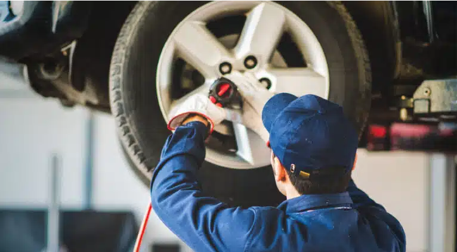

Seminuevos de AutosPeru: la mejor opción para renovar tu vehículo
junio 2025

Con los Seminuevos de Autos Perú, puedes acceder a un auto en excelente estado, con garantía y facilidades de pago. Conoce todo lo que necesitas para tomar una decisión segura. ¿Estás pensando en cambiar de auto sin asumir el costo de uno completamente nuevo? Los Seminuevos de Autoland Perú se presentan como una alternativa confiable y accesible. Con vehículos cuidadosamente seleccionados, procesos transparentes y múltiples beneficios para el comprador, esta propuesta se consolida como una de las más seguras del mercado peruano. Este artículo te contamos todo lo que necesitas saber: desde las ventajas de adquirir un seminuevo, hasta los modelos más destacados y las facilidades que hacen que comprar en Autoland Perú sea una experiencia simple y segura. ¡Acompáñanos y toma nota!
¿Por qué elegir un auto seminuevo?
En el mercado automotriz actual, optar por un vehículo seminuevo es una decisión estratégica para quienes buscan calidad y ahorro. Los Seminuevos de Autoland Perú se destacan por pasar rigurosas inspecciones técnicas que certifican su buen estado mecánico y estético. Así, puedes acceder a un auto en excelentes condiciones, listo para circular, con respaldo integral y documentación verificada. Lo que diferencia a Autoland Perú es la facilidad y el respaldo que brinda en cada etapa de la compra: puedes financiar tu vehículo con plazos flexibles, entregar tu auto actual como parte de pago y contar con asesoría personalizada. Además, cada vehículo está 100 % verificado, respaldado legalmente y con garantía, acompañado por un equipo de expertos que te ofrece una experiencia de compra segura, informada y sin complicaciones.
Beneficios de comprar seminuevos
- Menor inversión inicial: Ideal para ahorrar.
- Financiamiento flexible: Créditos personalizados.
- Historial transparente: Vehículos revisados.
- Más equipamiento por menos: Versiones superiores.
- Confianza y respaldo: Evita riesgos fuera del concesionario.
Modelos seminuevos disponibles
- Modelo A: Toyota Corolla destacando su eficiencia, comodidad y confiabilidad.
- Modelo B: Hyundai Tucson ideal para familias, con buen espacio interior y rendimiento sólido.
- Modelo C: Kia Rio compacto, económico en combustible y fácil de maniobrar en ciudad.
Preguntas frecuentes
- ¿Tienen garantía?
- Sí, hasta X meses en motor y caja.
- ¿Se puede agendar prueba de manejo?
- Claro, agenda ..aquí
- ¿Qué documentos necesito?
- DNI, recibos, sustento de ingreso...